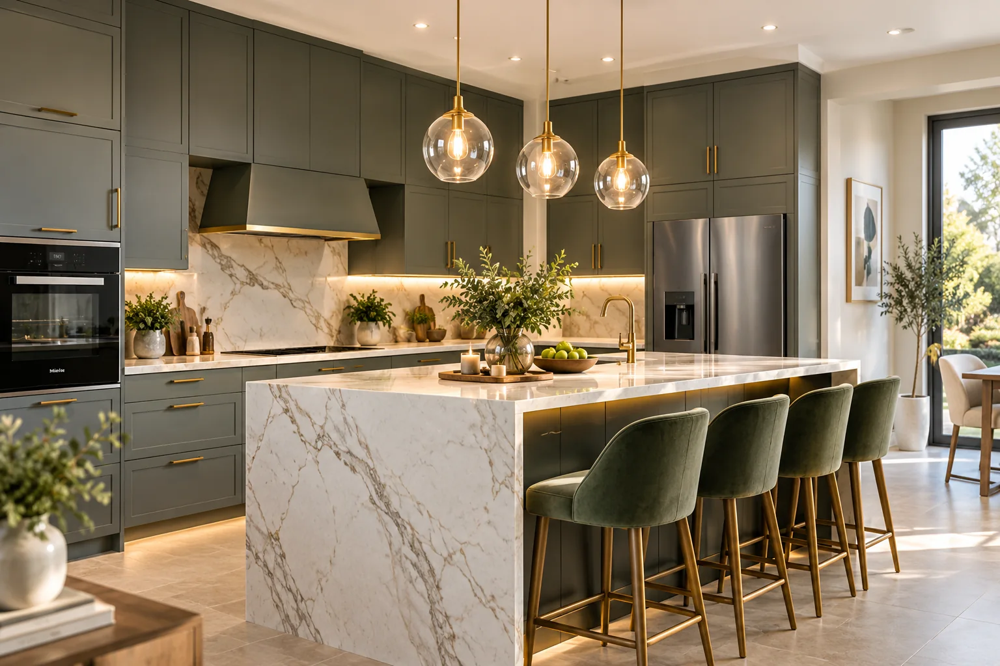
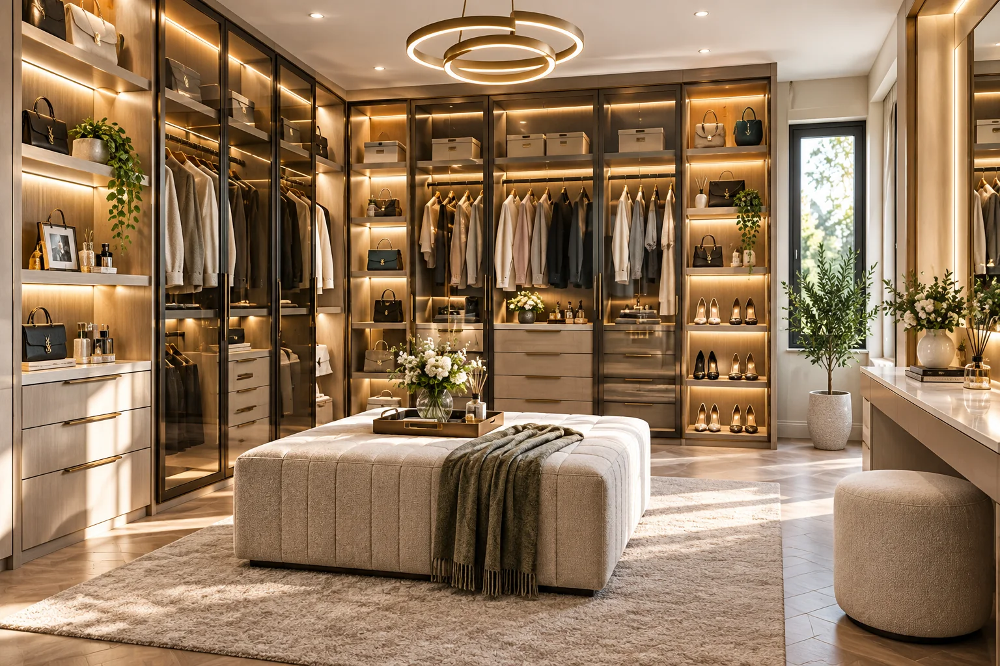
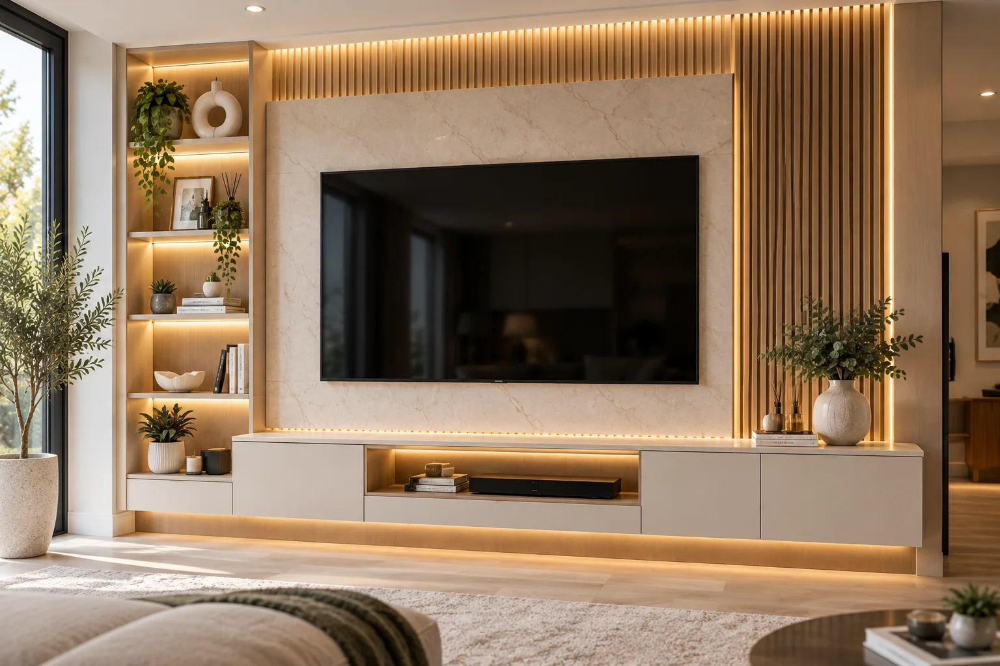
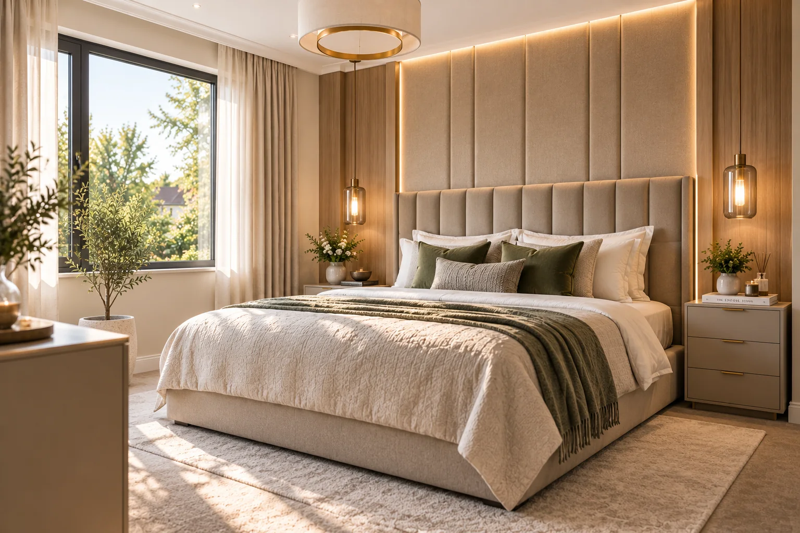
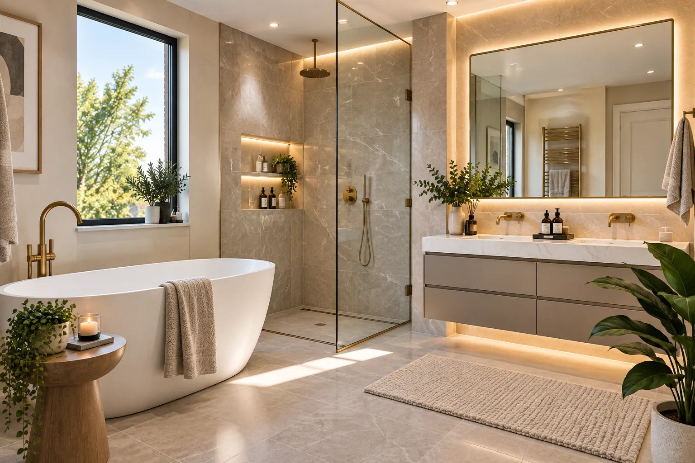
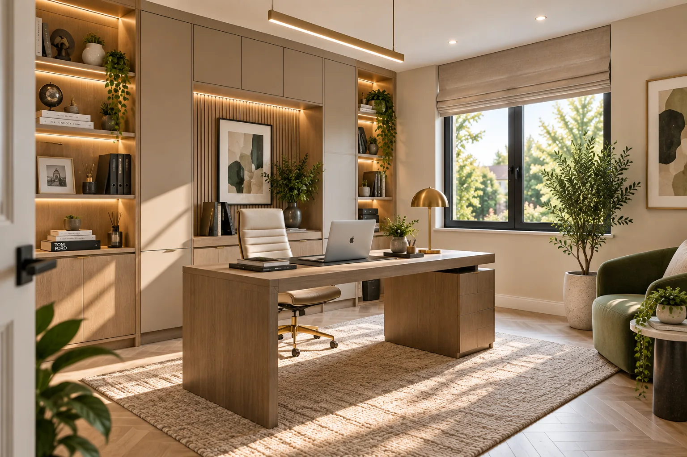
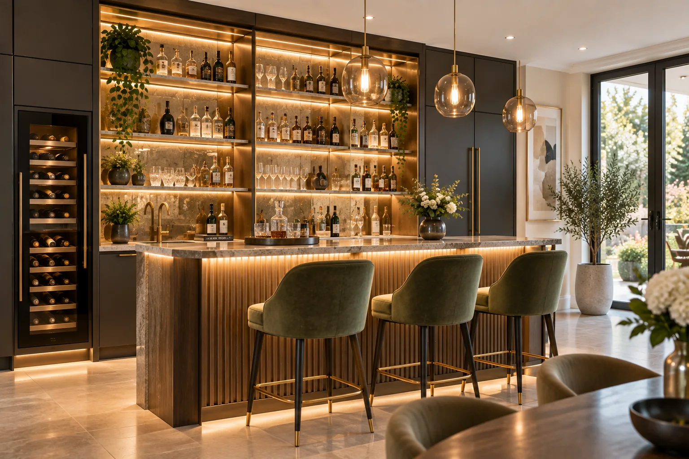
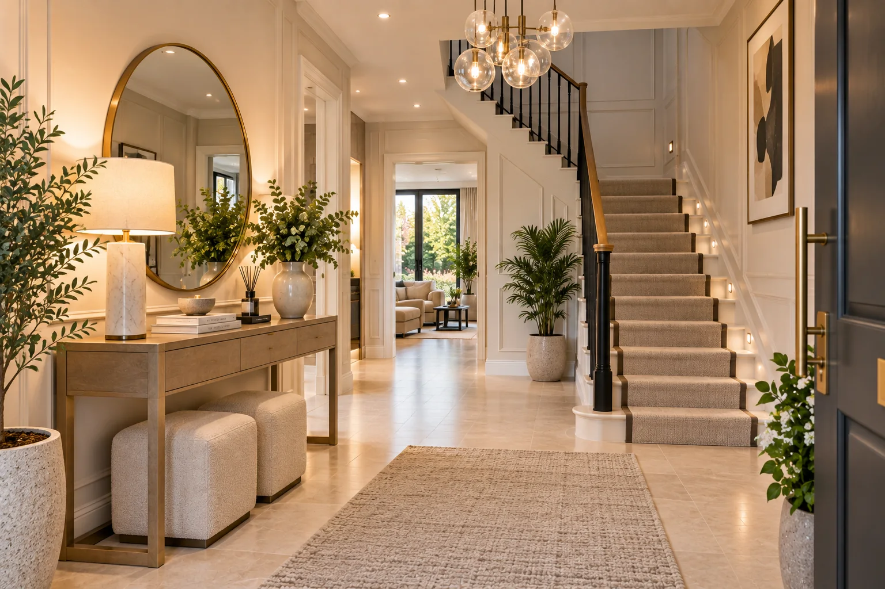
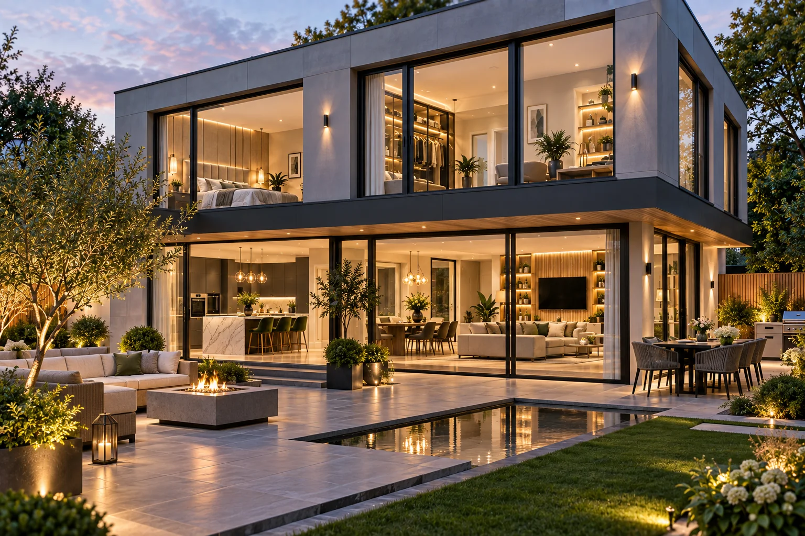
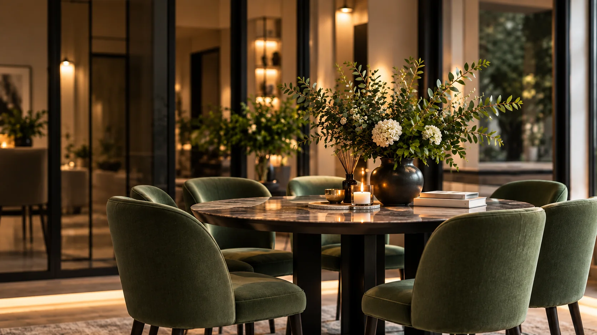

Wimbledon House
A calm, tailored interior where joinery, material and light work together to make everyday living feel effortless.
OUR WORK
Explore a selection of bespoke furniture, interior design and architectural work created with clarity, craft and care.
SELECTED PROJECTS
Every project is shaped around the people who use it, from the first conversation through to the final installation.

Wimbledon HouseInterior Design
Iver HouseBespoke Furniture
East Putney MansionInterior Design
Hampstead ResidenceResidential Interior
Richmond TownhouseBespoke Furniture
Surrey Garden HouseArchitectural Development
Fulham KitchenBespoke Furniture
Chiswick Dressing SuiteBespoke Furniture
Clapham Media WallBespoke Furniture
Esher ExtensionArchitectural DevelopmentA calm, tailored interior where joinery, material and light work together to make everyday living feel effortless.
Made-to-measure furniture designed around the architecture, storage needs and rhythm of the home.
Layered interior design balancing character, function and contemporary comfort.
Refined residential design with considered proportions and lasting materials.
Bespoke cabinetry and furniture that make every room work harder.
Architectural thinking and interior detail brought together as one cohesive home.
A kitchen planned for hosting, storage and the practical flow of daily life.
Personalised wardrobe and dressing space with elegant, organised storage.
Integrated living-room joinery that combines technology, display and hidden storage.
Thoughtful architectural development designed to add space, value and natural connection.
Tell us what you are planning and we’ll help you take the next step.
SEND AN ENQUIRY →